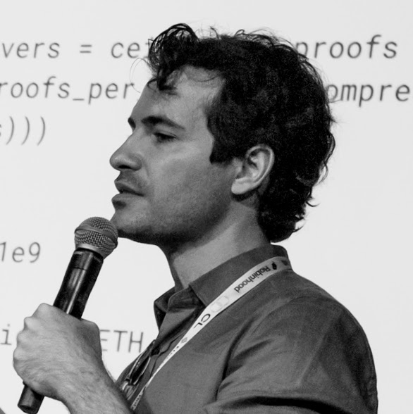

Connect your data.
Team
Built by operators.
The two founders designing and operating the simulation-first system.

Founder · AI & Security Lead
15+ years building software security and infrastructure. PhD-trained engineer behind the Zircuit blockchain — kept $50B+ in digital assets safe across Ethereum & Solana. Now applying that rigour to simulation-tested B2B sales for the European installer market.
- PhD Computer Security, TU Munich
- $50B+ in digital assets safeguarded across Ethereum & Solana
- Led the Zircuit blockchain build — AI + compliance baked in
- Ex-SAP Cloud Security head · Google Research · Quantstamp

Founder · ML & Research Lead
A decade of translating machine-learning research into market impact: computer vision at Trayzi, computational toxicology at Aalto, DILI-prediction algorithms with Johnson & Johnson, and now agentic AI for education and B2B sales.
- 10y ML research → production deployment
- J&J — DILI-prediction algorithms for drug safety
- Aalto — computational toxicology research
- Trayzi — applied computer vision at scale